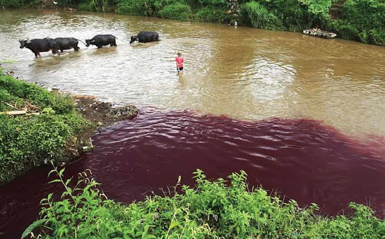

Alkisah pada zaman dahulu kala di tanah pasundan, di pinggiran sungai Citarum hidup lah seorang kakek tua yang terkenal karena memiliki ilmu sakti mandraguna. Disana Ia tinggal bersama anak perempuannya yang cantik jelita, Sekar.
Selain Sekar, Empu Wisesa memiliki 2 orang murid Jaka dan Wira, Ia menemukan mereka ketika masih bayi di sebuah desa yang hancur berantakan karena letusan gunung tangkuban perahu yang hingga saat itu lahar nya masih sering membahayakan area sekitarnya. Ke dua bayi itu kemudian dibawa pulang, dirawat dan diajarkan ilmu oleh Empu Wisesa.
Walaupun memiliki guru yang sama, Jaka dan Wira memiliki perangai yang berbeda. Jaka berparas tampan, Ia senang bermain dan pandai bercakap, walaupun pintar namun karena sifat nya yang menggampangkan sesuatu ia jauh ketinggalan dari Wira yang rajin mencari ilmu dan hakikat hidup.
Sifat yang berbeda tersebut tidak membuat mereka berdua berjauhan, mereka seperti dua orang saudara yang saling tolong dan berbagi rahasia. Namun ada satu hal yang tak mereka ungkapkan satu sama lain, yaitu tentang perasaan mereka terhadap Sekar, putri guru mereka.
Jaka terlebih dahulu menyampaikan maksud hati untuk melamar Sekar kepada Empu Wisesa, karena pandai mengambil hati guru nya, Empu Wisesa tanpa meminta persetujuan anaknya langsung menyetujui lamaran Jaka. Ia berfikir Sekar pasti juga menyukai Jaka yang rupawan dan pandai bergaul.
Keesokan hari nya Empu Wisesa memanggil Sekar dan kemudian menyampaikan keinginannya untuk menikahkan nya dengan Jaka. Sekar adalah anak yang baik dan berbakti pada orang tua namun baru sekali inilah Sekar membantah orang tuanya, ia menolak keinginan Empu Wisesa, ia mengatakan bahwa Ia mencintai Wira dan hanya mau menikah dengan Wira.
Hal itu membuat Empu Wisesa gundah, sebelumnya Ia sudah menjanjikannya pada Jaka. Agar adil ia kemudian membuat sayembara.
“Baiklah, aku hanya akan menikahkan Sekar dengan orang yang bisa memadamkan lahar panas Tangkuban Perahu.” kata Empu Wisesa
Jaka merasa itu adalah hal yang mustahil, tidak mungkin memadamkan lahar panas yang telah ada sejak berabad-abad yang lalu. Namun didepan Empu Wisesa dia menyanggupi nya dan mengaku ingin mengembara mencari ilmu untuk memadamkan lahar. Ia hanya berfoya-foya dan bahkan bermain wanita.
Sementara itu Wira, berfikir keras mencari tahu bagaimana cara memenangkan sayembara itu. Dengan tekun setiap hari ia mengitari cekungan luas yang terbentuk oleh lahar panas tersebut, dia tahu hanya air yang bisa mengalahkan api, tapi dari mana dia bisa mendapatkan air sebanyak itu. Setahun berlalu namun Ia belum juga menemukan caranya hingga suatu hari dia melihat berang-berang yang sedang membuat bendungan dari ranting-ranting pohon.

“Wah, bagaimana kalau aku membendung sungai Citarum sehingga air nya bisa memadamkan lahar panas” pikir nya dalam hati Dengan penuh perhitungan Wira mulai melaksanakan ide nya itu, mula-mula Ia mengungsikan manusia dan hewan-hewan yang ada di cekungan lahar tersebut agar tidak tenggelam oleh air. Kemudian berbekal kesaktian dari Empu Wisesa, Ia meruntuhkan sebuah bukit dengan tangan nya, sehingga tanah dan batuan membendung air sungai. Lama-kelamaan air mulai menggenang, lahar panas menjadi dingin dan cekungan itu berubah menjadi danau yang luas, orang-orang menyebut daerah itu “Danau Bandung”. Setelah berhasil melewati ujian yang di berikan oleh Mpu Wisesa, ia pun kemudian pulang dan melamar Sekar. Mpu Wisesa sangat senang, murid nya terbukti sangat mencintai anak semata wayang nya, dan mencegah bencana yang bisa muncul akibat lahar panas itu. Tak lama kemudian mereka pun mengadakan pesta pernikahan yang meriah, dihadiri oleh semua penduduk disekitarnya. Jaka tidak ada kabar beritanya lagi Setelah bertahun-tahun Wira & Sekar dikaruniai banyak anak dan cucu, sementara itu bendungan yang dibuat Wira mulai runtuh akibat debit air yang tinggi. Lama-lama air di danau itu mulai mengering, tanah nya menjadi subur dan gembur. Akhir nya mereka pun berpindah kesana, tak lupa mengajak penduduk sekitar. Lama kelamaan daerah itu menjadi ramai ditinggali dan didatangi pengembara, karena danau nya sudah tidak lagi ada, mereka menyebut nya Bandung. Menurut mitos nya penduduk asli kota Bandung berasal dari keturunan Wira dan Sekar. Begitulah Legenda fiktif Asal Mula Nama Kota Bandung, yang berasal dari kata “bendung” atau “bendungan” yang dibuat oleh Wira untuk memadamkan lahar panas Tangkuban Perahu. Menurut sejarah bendungan (Danau Bandung) itu seluas daerah antara Padalarang hingga Cicalengka (± 30 km) dan daerah antara Gunung Tangkuban Parahu hingga Soreang (± 50 km)